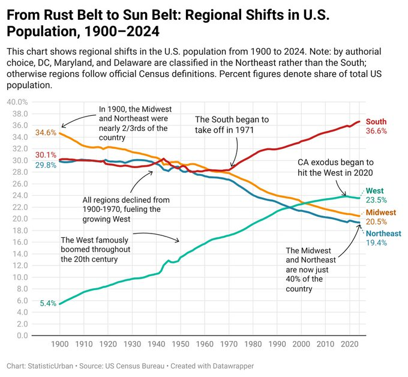
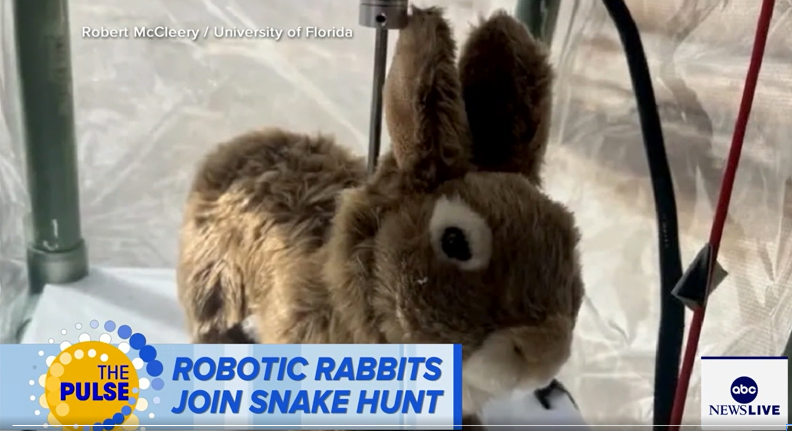
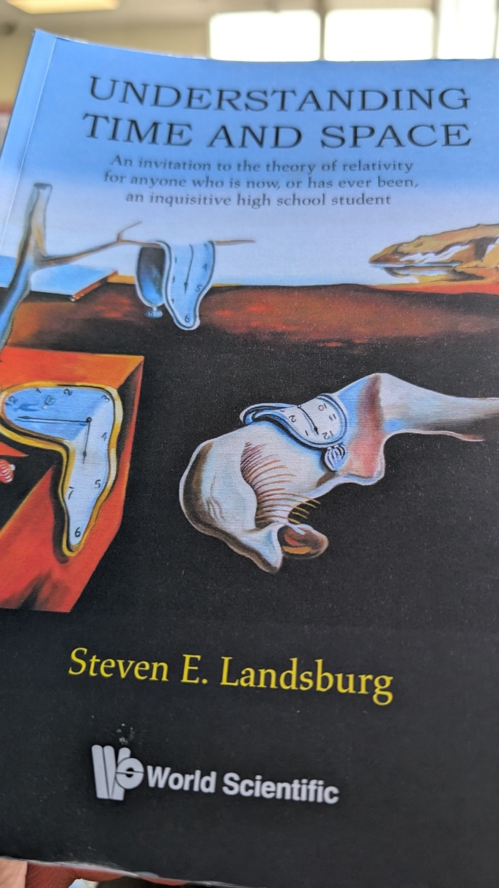

WEEKLY REMINDERS/ANNOUNCEMENTS – Eco 238, Week 2
For Tuesday’s Class
We are going to settle up from our classroom experiment during the start of class on Tuesday. If you owe us $5, please bring cash or prepare to Venmo me. My Venmo is @wintercow20. If you accepted the deal and we owe you money, we will pay you in class as well.
NOTE: the total funds that we generate from the experiment after payout to the WTA group will be used to donate to support local birding education and conservation at Braddock Bay Raptor Research. We still have a handful of students to settle up with.
Topics and Readings This Week
For the class material, we plan to spend a total of four lectures on our first section of the course before moving onto a short section on energy, so both lectures this week will be on environmental risks and our reaction(s) to them. I may instead choose to jump into efficiency section, will let you know in class.
Weekly Assignment
Your second weekly assignment is posted. PLEASE PAY ATTENTION TO WHAT WE ARE ASKING – IT IS A GROUP EXPERIENTIAL PROJECT CULMINATING IN A GROUP VIDEO DISCUSSION OF THE EXPERIENCE plus perhaps slides and images or videos of some or all of the experience. Since it is a holiday week, Monday may be an excellet time to Get Outside.
We are targeting a ONE WEEK turnaround for each weekly assignment. So, you should expect to see your grade by Monday mornings a week after the submission. Your TA will leave their initials along with comments on some of your work so you can keep track of who graded it. You will have a randomly assigned different TA grading your work each week.
Discussion Portions of Your Weekly Assignments: Please look each week for a reminder from Jingyao about our TA led discussion sessions. We are continuing to work on these and want to provide a space for real engaging conversations, the TAs are prepared to engage you with whatever discussion items we included in that week’s assignments, and we are also able to look back to previous week’s assignment to discuss the questions that are in the process of being graded.
Form Your Groups, Start Your Projects
All of the details on the what/how/who of the group projects can be found under, “Projects” on Blackboard.
In addition, to aid you in finding group members (I encourage you to mill around before or after lecture, but I know some of you don’t love that idea) there is a tentative class list posted in the “Syllabus ...” folder on Blackboard. Excellent projects are those that are pondered and discussed and debated all semester long. It will be evident if you do or do not do this. Note that Professor Rizzo grades all non-weekly work for the course.
Our TAs will assist you in finding a group if and only if you have tried unsuccessfully for the first two weeks of class.
TA Office Hours and Info
Look for an announcement from our Head TA Jingyao Wang Wu for an update.
The TAs are going to offer office hours and weekly discussion sessions which will enable you to explore class topics more deeply, and to dive into portions of the weekly class work (and possibly receive credit for doing so).
My Availability
Check tiny.cc/RizzoHours for up to date information.
I will be away from electronics from Friday afternoon through Monday night.
Will be having outdoor Lunch Bunch hangouts on Mon and Weds 1130am to 1245pm. Come on by next week.
GET STARTED ON A CLASS “GET OUTSIDE” PROJECT
Sunday, September 6th: Beginner Birder Trip – Charlotte and Turning Point Park
8am-noon
We’ll be looking for shorebirds, warblers, and other fall migrants along the river and lakeshore. At Charlotte Beach, we’ll look for gulls in many plumages and some shorebirds, too. At Turning Point Park, we will look for local resident birds and fall migrants. The Charlotte Beach area is mostly flat and paved; there is one long, steep grade at Turning Point Park. Length about 2 miles total. Restrooms are available at Charlotte only.
Meet at 8:00 a.m. at Ontario Beach Park in Charlotte in the northeast corner of the parking lot, beside the Genesee River outlet. Bring binoculars and, if you have them, spotting scopes.
Leader: John Boettcher 585-671-9639 and co-leader Rosemary Reilly 585-748-0802
Note: This is a field trip for beginners. New birders should feel free to join these trips regardless of experience level: bring binoculars if you have them. The pace & focus of Beginner Trips may not be satisfying for experienced birders. Our Beginner Trips focus on teaching identification skills, learning new habitats, and answering questions. Experienced birders are welcome but may be pressed into service as educators
Upcoming Special Events
Department of Economics Engerman Lecture
“After Shocks: Adaptation and Growth through Volatile Times”
Who: Rick Hornbeck of the University of Chicago
Professor Hornbeck is the V. Duane Rath Professor of Economics at the University of Chicago Booth School of Business. He is a leading applied microeconomist and economic historian whose research explores the historical development of the American economy. By combining massive, newly digitized historical datasets with modern economic theory, his work uncovers the fundamental, long-term drivers of wealth, productivity, and living standards across generations. Professor Hornbeck’s research frequently reshapes how we understand major historical shifts and crises. His famous studies look beyond traditional metrics to evaluate the enduring economic footprint of environmental disasters like the 1930s Dust Bowl, the systemic human gains of post-Civil War emancipation, and the massive aggregate wealth generated by historical infrastructure expansions like the American railroad network. He holds a Ph.D. in Economics from the Massachusetts Institute of Technology (MIT) and previously served as the Dunwalke Associate Professor of American History in the Economics Department at Harvard University.
Day: Wednesday, September 16th
Time: 5:00pm
Where: Morey 321

The Politics and Markets Project, Hosted by Professor David Primo
Title: Topic TBD (this will be a moderated panel discussion)
Date: Wednesday, November 4th
Time: 7:30pm to 8:30pm
Location: Wegmans Hall, 1400.
More Info on the PMP: Follow on Instagram
Department of Economics Special Guest Lecture
Title: Human Capital for Humans, with moderation by U of R Economics Undergraduate Isaac Miller
Who: Pablo Pena of the University of Chicago
Date: Thursday, October 8th
Time: TBD
Location: TBD
More Info: Why do people marry, have kids, invest in health, or choose a career? Economics has an answer, and it's not "supply and demand," it's human capital theory, the framework Nobel laureate Gary Becker built and spent his career applying to every domain of human life. Pablo Peña studied under Becker at Chicago, taught his famous course after him, and has now written the accessible version of that legendary class: Human Capital for Humans.
Join us for a talk and conversation with Professor Peña about the book — how economists think about parenting, aging, marriage, and the everyday decisions that shape who we become. Expect a short talk, a moderated discussion, and open Q&A. Copies of the book will be available for purchase (and signing) at the event.
About Professor Pena: Pablo Peña first encountered human capital theory twenty years ago as an undergraduate captivated by a course taught by Nobel laureate Gary Becker at the University of Chicago — an experience he's described as immediately clarifying. That encounter led him to TA the course, and eventually to teach it himself. Peña is now an Associate Instructional Professor in Economics and the College at the University of Chicago, specializing in applied price theory, human capital theory, and empirical economics, and his research uses experimental and quasi-experimental methods and large datasets to test economic theories with actionable applications for business, nonprofits, and government. Outside academia, he co-founded Microanalitica, previously served as Director of Private Sector Partnerships at the Development Innovation Lab, and headed Economic Studies at Mexico's National Banking and Securities Commission. He earned his Ph.D. in Economics from the University of Chicago.
His book, Human Capital for Humans: An Accessible Introduction to the Economic Science of People (University of Chicago Press, 2025), has been nominated as a finalist for the Manhattan Institute's 2026 Hayek Book Prize, and has drawn praise from economists including Steven Levitt, Tyler Cowen, and Nobel laureate Michael Kremer.
Additional Events: Please check our office hours site regularly for updates on additional events.
SOME THINGS THAT CAPTURED OUR ATTENTION
Permanent Clean Clothes: But what will happen to the dry cleaners and the dry cleaner chemical makers and the …?
More AI Externalities: The Economist has a couple good articles on how AI might introduce some additional inefficiencies into the the tort system:
AI, like a heat-seeking missile, can lock on to the most obscure provisions of the law—and create carnage. The impact on Britain’s employment tribunals (courts that resolve disputes between employers and workers) illustrates a phenomenon emerging everywhere. AI-induced demand is overwhelming bureaucracies built for the analogue age—from Dutch municipal-tax appeals to the Canadian privacy regulator to parking-ticket tribunals in every major city. In Britain workers now ask large language models, rather than human lawyers, to help them sue their bosses quickly and cheaply. Claims have surged and backlogs grown. A case filed today may not be heard until 2030.
Free, AI-powered legal advice should be good news for workers. Instead, it is proving to be a tragedy of the commons. For workers with genuine grievances, the surge in demand means longer waits for justice. For employers, it means bigger legal bills to respond to claims, both well-founded or fantastical. In the age of AI, a system intended to provide access to justice suffers from, if anything, too much access.
A separate article in the same magazine looks at the effect on the planning process:
Take planning. Officials have developed tools to speed up housing approvals by giving an initial verdict on whether a plan is compliant with the law. Yet local authorities report a surge in AI-generated objections to proposed developments. They are often more effective: AI-aided submissions will cite planning codes and legal precedents chapter and verse. For £45, Objector AI, a platform, will scan a wodge of planning documents, draw up the legal grounds for opposition and write a speech to read out at a public meeting.
“To be clear, I still expect AI to lead to faster economic growth. But the speed of the transformation is likely to disappoint some people in Silicon Valley.”
Name a Single Public Policy that Delivers a Quarter Trillion in Benefits Annually: This paper calculates how much shale gas has saved U.S. natural gas consumers. Using price differences between the United States, Europe and Japan, we calculate that U.S. natural gas consumers have saved $3.1-$4.3 trillion between 2007 and 2025, equivalent to $164-$227 billion annually. Access to low-price U.S. natural gas has been particularly valuable during major supply shocks such as the war in Ukraine, and the benefits of shale gas have been experienced broadly across sectors and states.
Good News for Your ______: “Scientists just realized we may have vastly overestimated microplastics pollution due to researchers accidentally measuring particles from their own plastic gloves. Any studies done with latex or nitrite gloves may need to be revised or redone entirely.”
But How Will We Scare and Sadden Little Children? Polar Bears fattening up despite “catastrophic” loss of sea ice.
“Never Going Back” “In a September 2024 report, UBS, an investment banker, predicted both tech hardware and semiconductors to be among the top four sectors that would be hardest hit by a general tariff.
Their analysis is spot on. Many of the hardware components that make AI and digital tech possible rely on imported materials not found or manufactured in the United States.
Neither arsenic nor gallium arsenide, used to manufacture a range of chip components, have been produced in the United States since 1985. Legally, arsenic derived compounds are a hazardous material, and their manufacture is thus restricted under the Clean Air Act. Cobalt, meanwhile, is produced by only one mine in the U.S. (80 percent of all cobalt is produced in China).
While general tariffs carry the well-meaning intent of catalyzing and supporting domestic manufacturing, in many critical instances involving minerals, that isn’t possible, due to existing regulations and limited supply. Many key materials for AI manufacture must be imported, and tariffs on those imports will simply act as a sustained squeeze on the tech sector’s profit margins.”
“Never Going Back” to COP: “ “Scholz’s withdrawal adds to a growing list of leaders deciding to miss the talks. European Commission President Ursula von der Leyen also reversed her plans to attend this week, citing the ongoing hearings to confirm her EU’s executive branch team. France's Emmanuel Macron, Canada’s Justin Trudeau, South Africa’s Cyril Ramaphosa, the United States’ Joe Biden, Brazil’s President Luiz Inácio Lula da Silva and Australia’s Prime Minister Anthony Albanese are also not scheduled to attend.” It looks like they expect only 50% of last year’s attendance.
“Never Going Back” to Gas Bans in Washington? “For a sense of what the proponents of Initiative No. 2066 were up against, we begin with the results of the presidential election in the state, where Vice President Kamala Harris crushed former President Donald Trump by a whopping 19%, grabbing 58% of the vote compared to his paltry 39%. Despite these formidable headwinds, Initiative No. 2066 is set to pass by slightly more than 3%, once officially certified, gaining approval on 51.6% of the ballots cast. All other ballot initiatives were rejected. Such a massive swing between the top of the ticket and an issue closely aligned with the losing candidate is a shocking result that adds compelling evidence to our view that momentum is dissipating quickly from the climate change movement.”
…What to make of this affair? We draw four main conclusions. First, Washington’s rejection of natural gas bans confirms our long-held view that while most people are happy to superficially support the climate change agenda, precious few are prepared to make any meaningful sacrifices for the cause. The stunning results of this vote and Trump’s sweep of the swing states lay bare a dangerous reality for dogmatic environmentalists: it is no longer verboten to openly challenge their worldview. Now that everybody knows that everybody knows the requirement to fall in line has been eviscerated, we expect a stampede to the exits.
Second, for all the talk in this election cycle about the sanctity of democracy, groups like the Sierra Club demand ideological alignment as a check valve—as long as the voters agree with them, the votes can count. Otherwise, it’s see you in court.
Third, if lawfare is going to trump election results, one must conclude that last week’s elections were incredibly bullish for attorneys across the country. Lawyers are in the litigation business, after all, and business will boom. Environmental groups are already little more than cash-harvesting machines for the plaintiff’s bar, and the most passionate supporters of their causes tend to be wealthy.
Finally, Washington’s battle over natural gas reveals that for those most obsessed with counting carbon, pretty darn good won’t ever be enough. The resources expended in a state that already carefully balances the environment with the limits of physics have been remarkable. One can’t help but wonder where these activists would turn their attention should they succeed in fully eradicating fossil fuels from their state. Graciously accepting victory and standing down does not seem to be the likely endgame.
“Follow the Science” “the NSF has awarded more than $2 billion in federal funding to thousands of scientific research projects that promoted DEI or “pushed neo-Marxist perspectives about enduring class struggle,” with such awards allegedly growing from 0.29 percent of all new grants in 2021 to 27 percent by 2024.’
“Never Going back” … to a Colossally Doomer Narrative: “This colony's survival in cooler waters suggests some corals may adapt better to environmental changes than previously thought” Note again the issue with measurement in environmental policy.
CHART(S) OF THE WEEK: Shifting Sands …

PHOTO OF THE WEEK: Ways Not To Think About Plastic … BUNNIES?

Robot rabbits in Florida battle to control invasive Burmese pythons in Everglades. They look, move and even smell like the kind of furry Everglades marsh rabbit a Burmese python would love to eat
VIDEO/DOCUMENTARY/BOOK/CARTOON, ETC OF THE WEEK: You’re never too old to learn

* * * * * *
QUOTE
We suffer more in imagination than we do in reality, we make things worse on ourselves by catastrophizing
Seneca